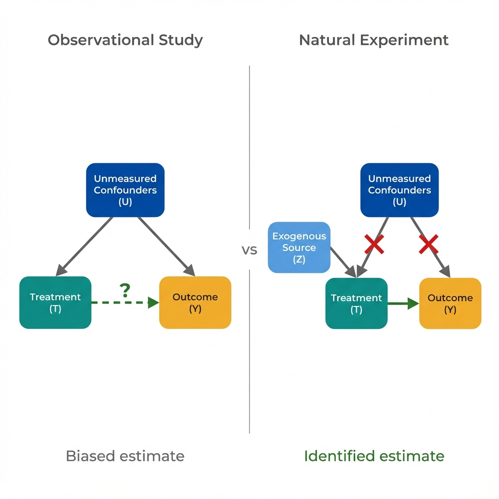

The Data
Imagine a health department studying whether a chronic disease management program reduces hospitalizations. Counties that adopted the program earlier show lower hospitalization rates. (Data are simulated for illustration.)
Hospitalization Rate by Program Adoption Year
Early adopters have better outcomes.
Can we conclude the program works? Or are early adopters different in ways that matter?
Observational Limits
A statistics-focused approach is to "adjust for confounders," adding more variables to the model. But this strategy has fundamental limits that more data cannot solve.
The Adjustment Approach
Add age, income, education, prior health conditions to the model. Hope that measured factors capture the differences between groups.
Find similar counties based on demographics, resources, and baseline health. Compare only matched pairs.
Model the probability of treatment, then weight or match on that probability. Assume selection is fully captured.
All of these assume that measured variables capture everything that drives both treatment and outcomes. If something unmeasured matters, the estimate is biased.
The Economist's Question
Instead of adjusting for confounders, economists ask whether there's any source of variation in treatment that is unrelated to outcomes except through the treatment itself.
Variation in treatment that comes from outside the system, rather than from patient or provider choices that might correlate with health.
Find something that changed treatment status but could not have directly affected outcomes. This "as-if random" variation mimics what a randomized trial would provide.
The economist's insight: Instead of assuming we measured all confounders, find variation where confounding is implausible by design.
Where might such variation come from?
Natural Experiments
A natural experiment occurs when something outside the system creates variation in treatment. Policy changes, eligibility cutoffs, and random timing can provide exogenous variation that mimics randomization.

In observational data, confounders (U) affect both treatment and outcome. A natural experiment provides variation through an instrument (Z) that affects only treatment.
Exogenous variation lets us estimate causal effects without randomization.
What specific study designs exploit these sources of variation?
Design Toolkit
Economists have developed specific quasi-experimental designs to exploit different sources of exogenous variation. Each design has its own assumptions and applications.
Difference-in-Differences
Compare the change in treated group to the change in untreated group over the same period.
Removes fixed differences between groups
Regression Discontinuity
Compare people just above and just below an eligibility cutoff where treatment changes sharply.
Near-random assignment at the threshold
Instrumental Variables
Use an external factor that affects treatment but not outcomes directly to isolate causal effects.
Works even with unmeasured confounding
Difference-in-Differences (DiD)
How It Works
- Compare outcomes before and after treatment in the treated group
- Subtract the same comparison for an untreated control group
- The "double difference" removes common trends and fixed group differences
- What remains is the treatment effect (under assumptions)
Key Assumption: Parallel Trends
- Without treatment, both groups would have followed the same trajectory
- Check by examining pre-treatment trends
- Fails if treatment timing is correlated with changing outcomes
- Example: States expanded Medicaid because their uninsured rates were rising faster
Regression Discontinuity Design (RDD)
How It Works
- Treatment is assigned based on a cutoff (age 65, income threshold, test score)
- Compare people just above and just below the cutoff
- People near the cutoff are nearly identical except for treatment status
- The "jump" at the cutoff reveals the treatment effect
Key Assumption: No Manipulation
- People cannot precisely control their position relative to the cutoff
- Check by looking for bunching or sorting at the threshold
- Fails if people can game their way above or below the cutoff
- Example: Hospitals changing diagnosis codes to meet performance thresholds
Instrumental Variables (IV)
How It Works
- Find an "instrument" that affects treatment but not outcomes directly
- Use only the variation in treatment driven by the instrument
- Isolates causal effect by removing endogenous variation
- Classic example: Draft lottery numbers to study military service effects
Key Assumptions: Exclusion and Relevance
- Exclusion: Instrument affects outcome only through treatment
- Relevance: Instrument meaningfully predicts treatment
- Cannot test exclusion directly; must argue it theoretically
- Example: Distance to hospital as instrument for treatment intensity
Each design exploits a specific type of exogenous variation.
The common thread: finding treatment variation that operates independently of confounders.
Key Insight
The fundamental shift from observational to quasi-experimental thinking is not about methods. It is about the source of variation we use to estimate effects.
What Is Identification?
Identification is the economist's term for establishing that an estimate reflects a causal effect rather than a correlation driven by confounding. A study is "identified" when the source of treatment variation is credibly exogenous.
- Observational studies rely on measured confounders, leaving identification uncertain
- Quasi-experimental designs exploit specific sources of exogenous variation
- Randomized trials guarantee identification through random assignment
Concepts Demonstrated in This Lab
Key Takeaway
Better statistical adjustment cannot fix a flawed comparison. When we cannot measure all confounders, the solution is not more sophisticated models. The solution is finding sources of treatment variation that operate independently of confounders. Policy changes, eligibility cutoffs, and timing differences can provide this. This is what economists mean by "identification."